Week 4: Converting Regular Expressions To DFAs And Back
Chris Tralie
We worked through some examples of regular expressions in class. What's neat about these is that in terms of regular languages, they are equally as expressive as DFAs. In other words, everything that can be expressed as a DFA can be equivalently expressed as a regular expression, and every regular expression can be converted into a DFA. The means that, amazingly, the operations of union, concatenation, and star can be used to build up any regular language from scratch.
Regular Expression To DFA
Sipser has a great explanation of this, so I won't rehash it here. We also have notes on a more general procedure for grep. But I'll go through an example that uses all of the operations and that goes all the way to a DFA:
Example 1
Let's consider the alphabet Σ={a, b} and the regular expression (ab|ba)* a (the | here means "union," which is also sometimes written as U). Let's start with an NFA that recognizes ab (which, if we're being very pedantic, is itself the concatenation of the language {a} and the language {b})
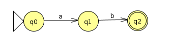Similarly, we can make an NFA that recognizes ba
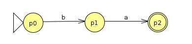First, we put these together with the union operation to recognize (ab|ba)
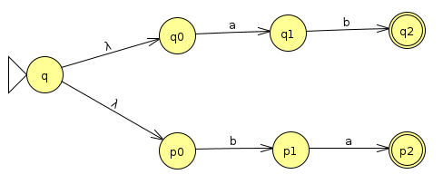To turn this into (ab|ba)*, we loop the accept states back to a state at the beginning with a λ transition. This state is itself an accept state, and it transitions with a λ back through the machine so the string can loop an arbitrary number of times through it
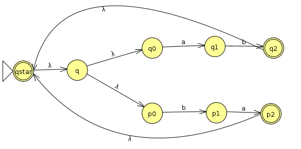Finally, we concatenate an a onto the end by sending lambda transitions from all accept states to the start state of a machine that accepts a. Then, the new accept state of the full machine is the accept state of the machine that accepts a
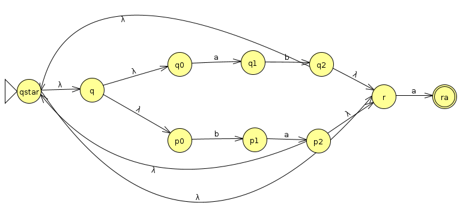We could stop here, but we'll continue the exercise to convert the machine into a DFA, following the steps from last week. First, let's simplify it a bit by consolidating the start states
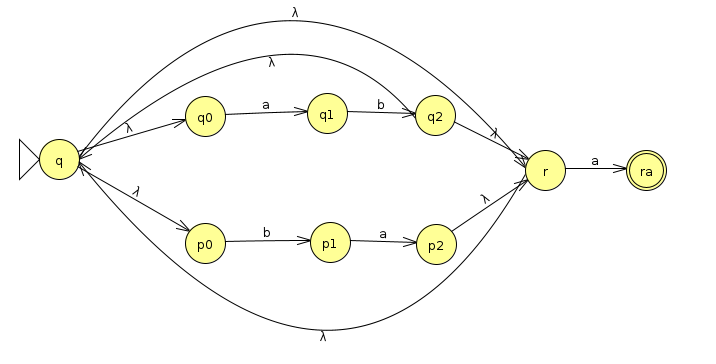We'll start at q, which immediately transitions to q0, p0, and r. So we'll start with the state tuple (q0, p0, r) and track those individual states. Whenever there's a λ transition, we'll include the states at the other end of the λ. For instance, when we end up at q2, we'll immediately jump to r, which also immediately jumps to q0 and p0. So, all together, we'd have the tuple (q2, r, q0, p0).
| a | b | |
| (q0, p0, r) | (q1, ra) | p1 |
| (q1, ra) | {} | (q2, r, q0, p0) |
| (q2, r, q0, p0) | (q1, ra) | p1 |
| p1 | (p2, r, q0, p0) | {} |
| (p2, r, q0, p0) | (q1, ra) | p1 |
| {} | {} | {} |
If we draw this as a state diagram, it looks like this (Click here to download the JFLAP file)
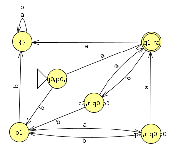If you stare at this for long enough, you should be able to convince yourself that this does indeed recognize the language (ab|ba)*a
DFA To Regular Expression
Now let's try to go the other way and show that it's possible to convert a DFA to a regular expression. Actually, the Sipser book explains a proof in quite a lot of detail, I'm just going to go through a few examples below. For convenience of construction, I'll be more concise than Sipser and leave out all of the null transitions (which he includes to make the formal inductive proof easier, but which become cumbersome when we're actually trying to create the regular expression).
What we're going to do is add a start state that has a lambda transition to the start state of the machine, and then add arrows from all of the accept states to a new end state that we add
Then, we'll rip out a state that's not qstart or qend and then "repair" the machine to make sure that it accepts the same transitions that were there before. To do this, we'll allow arrows to have regular expressions instead of just characters from the alphabet. We refer to this construction as a "generalized NFA" (GNFA). When repairing the machine, we have to check all possible transitions between all pairs of states that are left in the machine after we rip one out to see if they need to be fixed. This includes the transitions that were there before, plus transitions that would have gone through the ripped out state on the way from one to another, or from a state to itself. In state diagram format, what this means is the following: anything that looks like this
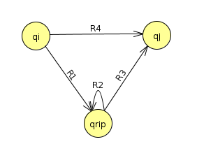turns into this
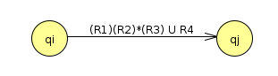Note also the specific case of a self transition: this scenario
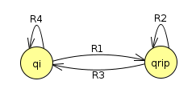turns into
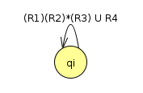We continue this process, ripping out one state at a time, until all that is left is qstart with an arrow towards qend
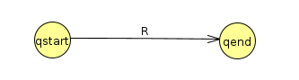This arrow has the regular expression R that describes the whole machine.
NOTE: One important note about this process is that there are many ways to do the ripping, since we choose an arbitrary state at each machine to rip out at any point. In fact, for a DFA with N states, there could potentially be N! different regular expressions you get from this!. So, for instance, a machine with 5 states could end up with 5*4*3*2*1 = 120 states (so there are potentially 120 unique answers for problem 3 on hw4). But these regular expressions will all be equivalent if you've followed the recipe above.
Example 1: Even Zeros
Let's consider the machine that accepts binary strings with none or an even number of zeros
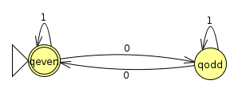We start the GNFA out by adding the start and end states with the appropriate λ transitions
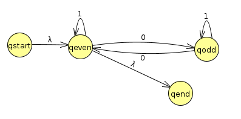We can start by ripping out qodd. Let's consider the transitions between what remains of qstart, qeven, and qodd, and qend
| qeven | qend | |
| qstart | λ | {} |
| qeven | 1 U 01*0 | λ |
We get the above table by simply applying our rip repair equations over and over again. For instance, we see that qeven still transitions to itself with a 1, but we also have to account for the paths 01*0 that could go through qodd before we ripped qodd out. The state diagram now looks like this:
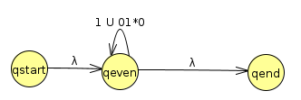At this point, we only have one option left of what to rip out, and we end up with the following
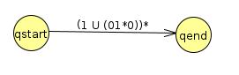Hence, or final regular expression is (1 U (01*0))*. If we look at this, we can see it accounts for all strings with a zero or even number of 0s.
As we mentioned, there are 2! ways to do the ripping. In this case, we could have ripped out qeven before qodd. Let's try this instead. So we'll start again with the initial GNFA
Looking at the transitions that remain between qstart, qodd, and qend, we devise the following transitions
| qodd | qend | |
| qstart | λ 1* 0 | λ 1* λ |
| qodd | 1 U 01*0 | 0 1* λ |
Drawn as a state diagram, the result looks like this (where I've excluded a concatenated λ in any expressions since that's simply the empty string)
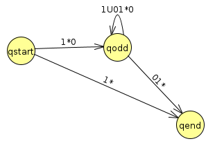Finally, we just need to rip out qodd. We'll end up with the result (1*)U((1*0)(1U01*0)*(01*)), which is also correct, but much uglier and more convoluted than the other way of doing it in this problem.
Example 2: Divisible by 3
Let's suppose we want to derive a regular expression to describe all binary strings that are evenly divisible by 3. Let's start with the DFA we made before
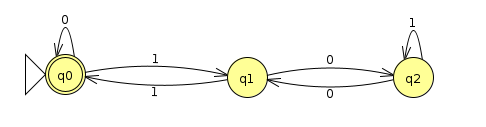Our first step towards making a regular expression is to convert to GNFA by adding lambda transition to q0 and from q0 to finish
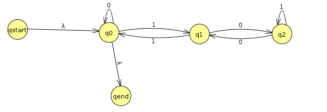Rip out q2 first
| q0 | q1 | qend | |
| qstart | λ | {} | {} |
| q0 | 0 | 1 | λ |
| q1 | 1 | 01*0 | {} |
Now we'll rip out q1
| q0 | qend | |
| qstart | λ | {} |
| q0 | 0 U 1(01*0)*1 | λ |
There's only one thing left to do! Rip out q0. There's only 1 arrow left
| qend | |
| qstart | λ (0 U 1(01*0)*1)* λ |
Since λ is the empty string, I can simplify to (0 U 1(01*0)*1)*
There are a lot of interesting things we can see in this regular expression. For example, if a string is divisible by 3, we can add any number of 0s either before or after it, and that string will also be divisible by 3. We can also see the symmetric of this expression, which helps us to see that the reverse of a binary string that's divisible by 3 is still divisible by 3.
We did make a particularly good choice by ripping out things first that would cause the least damage by ripping out q2, then q1, then q2. If we had instead ripped out q0, then q2, then q1, for instance, we would have gotten the regular expression (0*1)((10*1) U (01*0))*(10*). While this is definitely still correct and we still see some nice symmetry, it's harder to read than the other one.
Example 3: No more than 2 1s
Finally, let's derive a regular expression for the DFA that accepts binary strings with no more than 2 1s, to illustrate a case where there are multiple accept states. Below is the DFA we'll start with
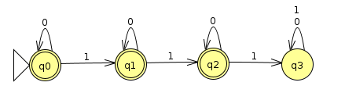First, we convert it to a GNFA by adding qstart and qend
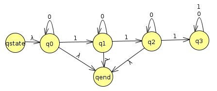Actually, we can immediately rip q3 out because it's a dead end
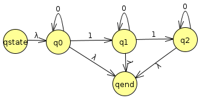Let's rip out q2 now. We now have to see if we need to repair any arrows coming out of qstart, q0, and q1, and going into q0, q1, and qend. The only one we actually have to repair is q1 -> qend
| q0 | q1 | qend | |
| qstart | λ | {} | {} |
| q0 | 0 | 1 | λ |
| q1 | {} | 0 | λ U 10* λ |
Noting that we can simplify λ U 10* λ to simply λ U 10*, we have
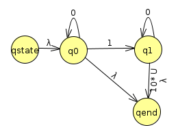Let's rip out q1 now
| q0 | qend | |
| qstart | λ | {} |
| q0 | 0 | λ U ( 10*(λ U 10*) ) |
Finally, we end up with the regular expression λ 0* λ U ( 10*(λ U 10*) ) which we can simplify to 0* U ( 10*(λ U 10*) ). If you stare at it, this definitely accepts all strings with at most two 1s!
Example 4
Click here to see an interactive example in the Virginia Tech book